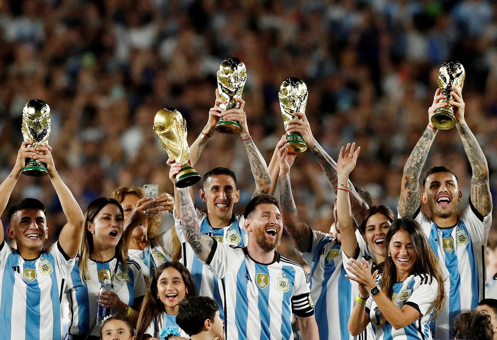

since their inception in 1902, the argentina national team has apperared in sixc FIFA World cup finals, inculuding final in 1930, 1978 the team won its first world cup beating Netherlands, the 1986 wining its second World cup after defeating west Germany, 1990 and 2014 were two world cups that could not be won by the team. 2022 when the team won its third world Cup by the hand of Leo Messi defeating France.
This natinal team is know for having one of the most pretty jersey